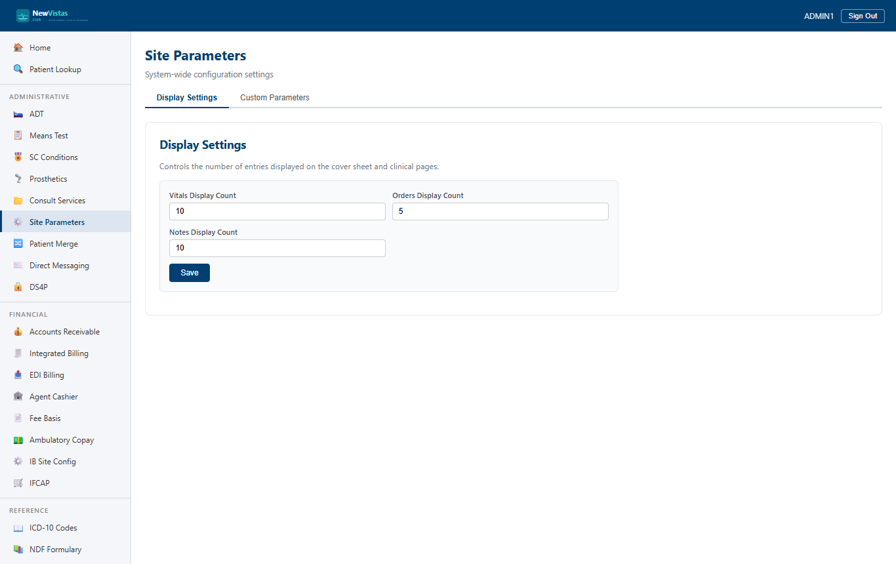

Manual › Administrator › Site Parameters
Site Parameters
Site Parameters is the system-wide configuration page. From here you tune how many entries the cover sheet and clinical pages show, and you set arbitrary custom parameters that other parts of the system read. It's the equivalent of VistA's site parameter files.
Open Site Parameters
- In the sidebar, under the system-administration items, click Site Parameters (or go to
/site-parameters). - The page loads the current display settings automatically.

The two tabs
- Display Settings — the row counts used across the cover sheet and clinical pages.
- Custom Parameters — a free-form name/value store for site-specific configuration.
Display settings
These counts control how many recent entries appear in the summary panels.
- On the Display Settings tab, set Vitals Display Count, Orders Display Count, and Notes Display Count (each between 1 and 100).
- Click Save. A confirmation appears when the settings are stored.
Where these show up
These counts govern the "recent" lists on the
Cover Sheet and clinical pages —
e.g. how many recent vitals, active orders, or progress notes are shown
before the list is capped. Allergies are always shown in full and are not
affected.
Custom parameters
Custom parameters are a simple key/value store — a parameter name and a string value — that other parts of the system can read by name.
- Click the Custom Parameters tab to load the existing parameters.
- Under Add / Update Parameter, enter a Parameter Name (e.g.
DefaultClinic) and a Value. - Click Set Parameter. Setting an existing name overwrites its value.
- To remove a parameter, click Delete in its row.
Tip
Custom parameters also drive per-site feature opt-ins. For example,
enabling the
PATIENT_MERGE feature here is what unlocks the
Patient Merge workflow for the site.